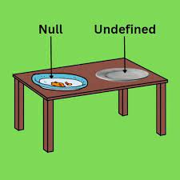

Discuss the scope of var, let, and const.
`var`, `let`, and `const` are all keywords used for declaring variables in JavaScript. Each of these keywords has a different scope and behavior when it comes to variable declaration and assignment.
1. **var**:
Scope: Function-scoped or globally scoped, depending on whether it's declared inside a function or at the top level of a script.
Hoisting: Variables declared with `var` are hoisted to the top of their containing function or global scope. This means you can use a variable before it's declared, but it will have an initial
value of `undefined`.
Re-declaration: Variables declared with `var` can be re-declared within the same scope without any error.
2. **let**:
Scope: Block-scoped, meaning it's limited to the block in which it's defined, such as loops, conditionals, or functions.
Hoisting: Like `var`, `let` declarations are hoisted, but they are not initialized. Get a `ReferenceError` try to access a `let` variable before its declaration.
Re-declaration: It cannot re-declare a variable with `let` in the same scope. Attempting to do so will result in a syntax error.
3. **const**:
Scope: Like `let`, `const` is block-scoped and limited to the block in which it's defined.
Hoisting: Similar to `let`, `const` declarations are hoisted but not initialized.
Re-declaration: It cannot re-declare or reassign a variable declared with `const`. It's intended for creating variables that won't change their value after initialization.
Value Assignment: Variables declared with `const` must be assigned a value when they are declared and cannot be left uninitialized.
• Tell us the use cases of null and undefined.
Null is used when we want to show any variable's missing or unknown value. At the same time, Undefined is a predefined Javascript type assigned to a variable or object that has not been assigned.
1. **Undefined:**:
Default Value: When a variable is declared but not assigned a value, it is automatically initialized to "undefined" in many programming languages.
Missing Property: When trying to access a property that doesn't exist in an object, it often results in "undefined."
Function Return: If a function doesn't explicitly return a value, it implicitly returns "undefined."
Function Parameters: If a function is called with fewer arguments than its parameter count, the remaining parameters are assigned the value "undefined."
Index Out of Bounds: In arrays, attempting to access an index that is out of bounds will yield "undefined."
Callback Functions: If a callback function is expected to have a return value but doesn't, the result might be "undefined."
2. **Null**:
Explicit Absence of Value: Unlike "undefined," which usually indicates a lack of assignment or presence, "null" is used to explicitly represent the absence of any meaningful value.
Initializing Variables: Sometimes, you might intentionally initialize a variable with the value "null" to indicate that it hasn't been assigned a valid value yet.
Resetting Values: You can assign "null" to a variable or property to indicate that it should no longer hold a valid value or reference.
Checking for Existence: When a variable might or might not hold a value, you can compare it to "null" to determine whether a meaningful value has been assigned.
In summary, "undefined" is often used to indicate situations where a value is missing due to default behavior or improper access, while "null" is employed when you want to explicitly represent the absence of a value, often in a controlled and intentional manner. The specific use cases can vary between programming languages, but the general concepts remain consistent.
• What do you mean by REST API?
An API, short for application programming interface, establishes rules for connections and communication between applications or devices. A REST API follows the principles of the REST architectural style, governing how data interactions occur.
REST APIs use HTTP requests for standard database actions like creating, reading, updating, and deleting records (CRUD operations) within a resource. For instance, a GET request fetches data, POST creates, PUT updates, and DELETE removes records. All HTTP methods are applicable. A well-crafted REST API resembles a browser-loaded website with inherent HTTP capabilities.
The current state of a resource is its representation, deliverable in various formats like JSON, HTML, etc. JSON is popular for its human and machine readability, being language-independent.
Request headers and parameters play a vital role in REST API calls, holding identifiers, metadata, authorizations, URIs, cookies, etc. These, coupled with response headers and HTTP status codes, constitute a strong REST API design.
.png)